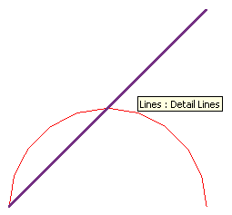

Detail Curve Must Indeed lie in Plane
The day before yesterday, I mentioned that the geometry curve used to define a detail curve must lie in the plane of the view displaying it. This requirement has always been there, in theory, but it was not strictly enforced in previous versions of the API. As mentioned, the NewDetailCurve method now throws an assertion if the curve passed in to it violates this condition, and so does NewModelCurve. Two other questions arose in this context, and the second one is the reason for this renewed post on the subject.
- How can I determine the plane equation or transformation of the current view or sketch plane in order to transform the curve to it as required?
- Could you please provide a working sample of the NewDetailCurve method actually creating a curve element in Revit 2011?
To obtain the plane equation of the current view, you can simply query the View.SketchPlane property, get the geometry plane from the SketchPlane.Plane property, and ask for its normal and origin.
The second question caused a surprise for me, because it shows how important the new behaviour actually is. It unexpectedly highlights a problem with the previous versions of The Building Coder samples which has been slumbering there undiscovered for over half a year.
My initial response was to say: Sure, simply run The Building Coder sample command CmdDetailCurves, which I recently ported to 2011.
Luckily, I tried it out myself before saying so, and to my surprise, it threw the exact same exception: "Curve must be in the plane".
Looking at the sketch plane of the view and the arc curve I am feeding into the method in the debugger, I see that the plane has the normal vector (0,0,1), whereas the arc has
Normal = {(0.000000000, -0.707106781, 0.707106781)}
So obviously I have been providing a curve that does not lie in the plane all along. The reason is that the end point of the arc was inadvertently defined with a non-zero Z coordinate as
XYZ end1 = new XYZ( 10, 10, 10 );
I changed the arc definition points to
XYZ end0 = new XYZ( 0, 0, 0 ); XYZ end1 = new XYZ( 10, 0, 0 ); XYZ pointOnCurve = new XYZ( 5, 5, 0 );
Once that is done, the exception is no longer thrown and my detail lines are created as expected:

Come to think of it and comparing this image with the one in the original post, I was always wondering in the back of my mind why the arc looked so crooked, but I did not notice consciously enough to have a more careful look at the time. Now I know, and it was simply not planar. That is finally discovered by the exception introduced in the Revit 2011 API and I am forced to fix it. That's what comes from copying other people's code, back then.
Here is an updated version 2011.0.65.1 of The Building Coder sample code including the fixed implementation of the external command CmdDetailCurves. I changed the version numbering system again from the one I described last: The major version number corresponds to the Revit version, and I may use the minor version number to indicate intermediate updates of the Revit API, if any appear. The build number is currently set to 65 and indicates the number of commands defined, at the moment, at least, leaving the revision number free to be incremented for fixes, which is what I have done in this case.
So now we do have a working sample of producing a detail line using the NewDetailCurve method in Revit 2011.
Another question that arose in the context was the projection of points and other data onto the plane for the purpose of using it to define detail curves.
Projecting points onto a plane
The Revit API does provide a method Face.Project to project a specified point onto a face, but unfortunately no analogue method for the plane.
To project a point orthogonally onto a plane, you can simply pick the closest point on the plane to the given point. The closest point on the plane can be determined by calculating the signed distance between the given point and the plane, multiplying the plane normal vector by that factor, and subtracting the resulting vector from the point. Here is some C++ code achieving this from my archives:
Point3d Plane::closestPointTo( const Point3d & p ) const { double d = signedDistanceTo( p ); return p - d * m_n; }
The signed distance from a point to a plane can be easily determined by calculating the dot product between the point and the plane normal 'm_n' and subtracting the distance of the plane from the origin 'm_d':
inline double Plane::signedDistanceTo( const Point3d & p ) const { return m_n.dotProduct( p.asVector() ) - m_d; }